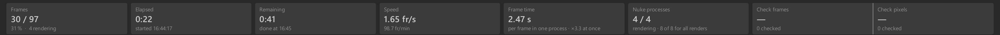
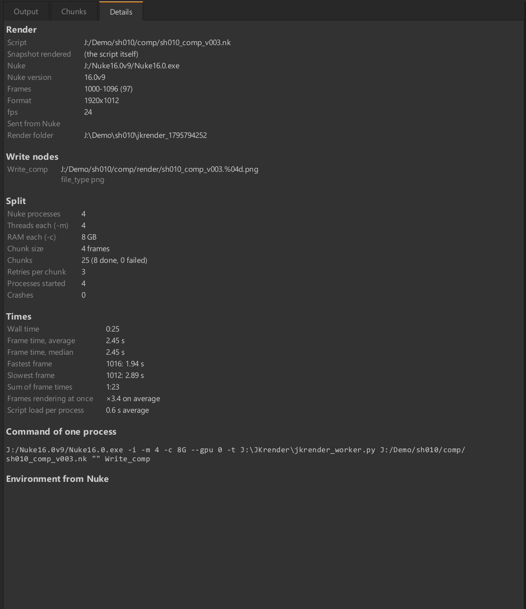
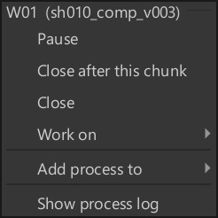
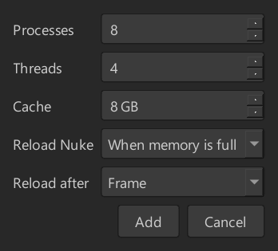
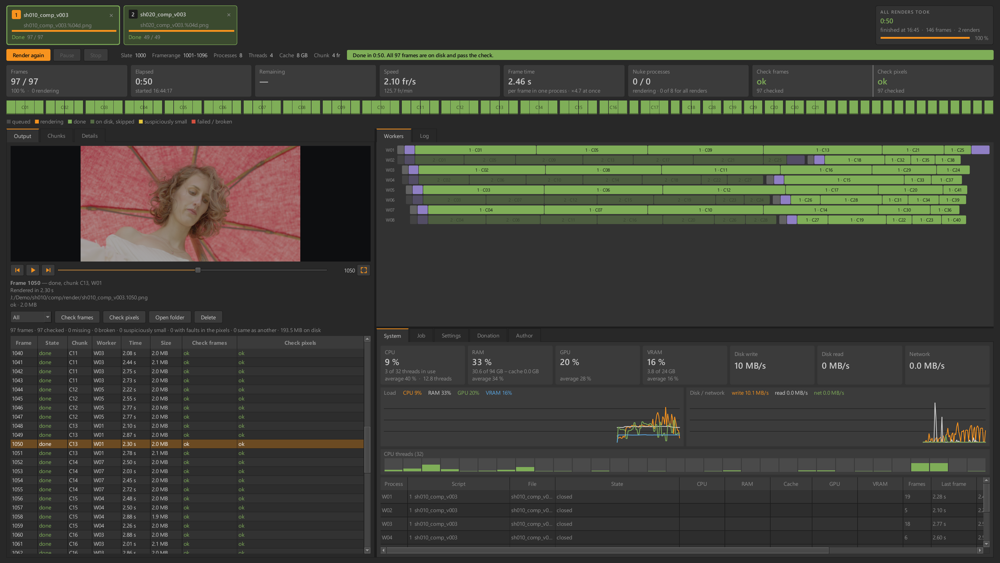

Schnelles lokales Rendern für Nuke. Ein Render wird in Stücke (Chunks) geteilt, die mehrere Nuke-Prozesse gleichzeitig rechnen. Nach dem Render prüft JKrender jedes Frame auf der Platte.
Inhalt
1Wie JKrender arbeitet
2Installation und Start aus Nuke
3Übersicht des Fensters
4Render-Karten und Steuerzeile
5Kacheln und Frame-Karte
6Panel Output: Vorschau und Frames
7Panels Chunks und Details
8Panels Workers und Log
9Panel System
10Tabs Job und Settings
11Einen Render einstellen
12Test this script
13RAM und VRAM im Blick
14Prüfungen, Töne, Absturz, Daten
15Maus und Tasten: Spickzettel
16Wenn etwas nicht geht
1 Wie JKrender arbeitet
Ein normaler Nuke-Render läuft in einem Prozess, der das ganze Script Frame für Frame rechnet. Ein Nuke nutzt aber selten alle 32 Threads der CPU. JKrender startet deshalb mehrere Nuke-Prozesse nebeneinander. Jeder öffnet das Script nur einmal und bekommt dann Arbeitsstücke, sogenannte Chunks: zum Beispiel 10 Frames hintereinander.
Drei Zahlen, die über die Geschwindigkeit entscheiden
Processes
Wie viele Nuke-Prozesse gleichzeitig laufen (für alle Renders zusammen). Mehr Prozesse schaffen mehr auf einmal, brauchen aber auch mehr RAM und VRAM.
Threads
Wie viele CPU-Threads jeder Prozess bekommt (Nuke -m). Processes × Threads sollte etwa die Thread-Zahl des PCs ergeben (hier 32).
Cache
Das Cache-Limit eines Prozesses in GB (Nuke -c). Ein Prozess nimmt in Wirklichkeit mehr. Wie viel, zeigt System › RAM.
Standard sind 8 Prozesse × 4 Threads. Schwere Comp-Scripts, die ein Nuke schon allein auslastet (Defocus, Denoise), sind auf 4 × 8 oft schneller und brauchen halb so viel RAM. Scripts, deren VRAM wächst, wollen weniger Prozesse. Was für dein Script am besten ist, misst Test this script (Kapitel 12).
Wo was liegt
Was
Wo
Einstellungen
~/.nuke/JKrender/settings/settings.json (jeder Benutzer hat seine eigenen). Ältere Versionen hatten sie in ~/.jkrender; JKrender verschiebt sie beim ersten Start selbst.
Render-Logs
~/.nuke/JKrender/log/: ein Ordner pro Render (Snapshot des Scripts, Job, Log jedes Nuke-Prozesses und report.json). Ältere als 15 Tage werden gelöscht; die Script-Kopien nicht geöffneter Renders werden nach einer Stunde gepackt (.gz).
Geladene Bibliotheken
~/.nuke/JKrender/lib/: numpy und OpenEXR (EXR-Vorschau) und ffmpeg (Filme). Eine neue JKrender-Version lässt sie in Ruhe.
Testergebnisse
~/.nuke/JKrender/settings/test_results
Gerenderte Frames
Dort, wohin der Write sie schickt. JKrender löscht sie nie von selbst, nur mit der Taste Delete.
2 Installation und Start aus Nuke
Installation (einmal)
1Kopiere den ganzen Ordner JKrender nach %USERPROFILE%\.nuke\. Der Ordner kann anders heißen (ein Zip von GitHub ergibt JKrender-main): benenne ihn immer in JKrender um.
2Füge in ~/.nuke/init.py diese Zeile hinzu (lege die Datei an, falls es sie nicht gibt):
nuke.pluginAddPath("./JKrender")
3Nuke neu starten. Beim ersten Start fragt JKrender in einer Frage, ob es herunterladen soll, was Nuke nicht mitbringt:
Was
Größe
Wofür
numpy und OpenEXR
ca. 15 MB
EXR-Vorschau und Pixelprüfung
ffmpeg und ffprobe
ca. 77 MB
Filme prüfen und abspielen (MOV, MP4, MXF)
Der Download läuft im Hintergrund nach JKrender/lib; Nuke ist währenddessen nutzbar. ffmpeg ist der LGPL-Build von github.com/BtbN/FFmpeg-Builds, geprüft gegen die SHA-256-Liste des Release. Er wird nur angeboten, wenn der PC noch keinen hat: ein ffmpeg im PATH oder aus WinGet wird zuerst genutzt.
Wenn du ablehnst, rendert alles weiter, nur ohne EXR-Vorschau bzw. ohne Prüfen und Abspielen von Filmen. Gefragt wird wieder, wenn du lib/DECLINED (numpy, OpenEXR) oder lib/DECLINED_FFMPEG (ffmpeg) löschst und Nuke neu startest. Schlägt ein Download fehl, sagt Nuke warum und wie man es von Hand installiert (winget install ffmpeg).
Nuke 16 und neuer starten das Fenster in Nukes eigenem Python. Nuke 13–15 bringen PySide2 mit: installiere Python 3.10 oder neuer und pip install PySide6 psutil, JKrender findet es (oder setze JKRENDER_PYTHON). Windows, macOS und Linux.
Neue Version: JKrender bietet sie beim Öffnen an (What's new, Update, Later) oder über Settings › Check for updates; die Ordner lib, log und settings bleiben. Danach Nuke neu starten.
Das Menü JKrender in Nuke
Eintrag
Was er tut
Render Selected Write(s) Ctrl+Alt+R
Schickt die gewählten Writes (oder Groups mit Writes) an JKrender. Jeder Write bekommt eine eigene Karte. Ist das Fenster noch nicht offen, öffnet es sich.
Open Renders Folder
Öffnet den Ordner mit den Render-Logs.
Ist das Script nicht gespeichert, fragt es Save it and render?: gerendert wird die gespeicherte Fassung. Ein Write, dessen Pfad keine Framenummer hat (sh010.exr statt sh010.####.exr), wird abgelehnt: jedes Frame würde dieselbe Datei überschreiben. Scripts aus Nuke Non-commercial und Indie (.nknc, .nkind) rendern im selben Modus.
Was nach dem Senden passiert
Snapshot: gerendert wird das Script so, wie es beim Senden war. In Nuke kannst du sofort weiterarbeiten und speichern, der laufende Render merkt davon nichts. Willst du ein geändertes Script rendern, schicke es erneut aus Nuke: das neuere Senden ersetzt die alte Karte.
Frage nach dem Cache: ist ein Nuke offen, fragt Render, ob dessen Buffer, Playback-Cache und Blink-Cache geleert werden sollen, damit der Render mehr Speicher hat. Die Standardantwort ist No, der Render startet in beiden Fällen; Settings › Clear Nuke cache without asking leert ihn ohne Frage. Der Disk-Cache bleibt.
3 Übersicht des Fensters
Oben sind die Render-Karten und die Steuerzeile, darunter die Zahlen und die Frame-Karte. Der Rest sind drei Panels: links Output / Chunks / Details, rechts oben Workers / Log, rechts unten System / Job / Settings / Donation / Author. Die Grenzen zwischen den Panels lassen sich ziehen.
1
2
3
4
5
6
7
8
9
10
1Render-Karten: ein Write (Render) pro Karte. Ein Klick wählt ihn.
2Wann alle Renders fertig sein sollten.
3Render, Pause, Stop für den gewählten Render.
4Slate, Framerange, Processes, Threads, Cache und Chunk dieses Renders (nur zum Lesen).
5Kacheln mit Zahlen: Frames, Zeit, Tempo, Prozesse, Prüfungen.
6Die Frame-Karte nach Chunks. Ein Klick auf ein Frame zeigt es.
7Output: Vorschau eines Frames mit Abspielen.
8Output: Filter, Prüfungen, Ordner, Löschen und die Frame-Liste.
9Workers: Zeitleiste jedes Nuke-Prozesses.
10System: Auslastung des PCs und Prozesstabelle. Daneben die Tabs Job, Settings, Donation und Author.
4 Render-Karten und Steuerzeile
Eine Render-Karte
Jeder gesendete Write ist eine Karte: Nummer, Skriptname, die Datei, die der Write rendert (sh010_comp_v003.####.png; der Tooltip zeigt den Write-Node und den ganzen Pfad), Fortschrittsbalken und Zustand (Ready, Waiting, Rendering, Paused, Checking output, afterRender hooks, Done, Failed, Stopped). Klick wählt die Karte, das ganze Fenster zeigt dann diesen Render. Shift+Klick wählt mehrere Karten; Render, Pause und Stop gelten dann für alle, Render again auch für fertige (es fragt einmal für alle). Das Kreuz × schließt den Render, die Frames auf der Platte bleiben. Rote Karte: der Render hat einen Fehler (fehlgeschlagen, Nuke hat einen Frame nicht gerendert, kaputte Frames, ein Nuke-Fehler, ein fehlgeschlagener Render-Hook), auch während des Renderns; was genau, sagt der Tooltip der Karte. Ein abgestürzter Nuke-Prozess färbt die Karte nicht rot: der Chunk wird in einem neuen Nuke noch einmal gerendert, und der Tooltip sagt, wie oft Nuke abgestürzt ist. Ein wegen RAM oder VRAM geschlossener Prozess ist auch kein Fehler.
Die Renders teilen sich ein Budget an Prozessen. Nebeneinander laufen höchstens so viele, wie Settings Max renders at once sagt (Standard 3); die Prozesse werden aufgeteilt (8 → 4 + 4 → 3 + 3 + 2). Ein Film (MOV, MP4…) hat einen eigenen Prozess zusätzlich und zählt nicht zu Max renders (Kapitel 6). Die Kartennummern gehen nach Platz: schließt du eine Karte, werden die anderen wieder ab 1 nummeriert.
Die Karte rechts: ALL RENDERS DONE IN
Wann alle laufenden oder wartenden Renders fertig sein sollten, beim Tempo, mit dem der PC gerade rendert. Darunter: wann sie enden, wie lange sie schon laufen und wie viele Frames übrig sind. Sind alle durch, zeigt die Karte ALL RENDERS TOOK: wie lange alles gedauert hat.
Die Steuerzeile
Element
Was es tut
Render
Startet den gewählten Render (oder mehrere gewählte). Frames, die schon in Ordnung auf der Platte sind, überspringt er. Nach Stop geht der Render dort weiter, wo er aufgehört hat (Resume). Hat der Render Frames auf der Platte (fertig, gestoppt oder mit Frames von früher), fragt er: Only missing rendert nur fehlende oder kaputte Frames (die anderen sind in der Karte dunkelgrün), All frames again rendert alles neu, Cancel nichts. Nach Stop eines Laufs All frames again bietet er zuerst Go on (N left) an: auch die Frames, die dieser Lauf noch nicht erreicht hatte, werden gerendert.
Pause
Friert alle Nuke-Prozesse des Renders mitten im Frame ein (die CPU wird frei, der Speicher bleibt belegt). Ein weiterer Klick macht weiter.
Stop
Stoppt den Render, beendet die Prozesse und löscht halb geschriebene Frames und Temp-Dateien von Nuke. Fertige Frames bleiben.
Slate
Die Slate-Nummer: der Frame vor der Framerange, wenn Slate an ist (Tab Job).
Framerange
Die Frames dieses Renders: der Bereich aus Nuke, falls du ihn im Tab Job nicht geändert hast.
Processes · Threads · Cache · Chunk
Womit der Render läuft. Geändert im Tab Job › Processes and Chunks; die Zahl der Prozesse auch während des Renderns per Rechtsklick in System.
Farbiger Balken
Das Ergebnis des Renders, siehe unten.
Der farbige Balken mit dem Ergebnis
Farbe
Bedeutung
Beispiel
Grün
Fertig, alle Frames sind auf der Platte und haben die Prüfung bestanden.
Done in 2:06. All 97 frames are on disk and pass the check.
Gelb
Fertig, aber etwas ist nicht geprüft oder sieht verdächtig aus (Frames nicht geprüft, verdächtig klein; ein Slate gilt nicht als klein).
frames not checked · 2 suspiciously small
Rot
Ein Fehler: der Render ist fehlgeschlagen, kaputte Frames, oder Check pixels hat ein Problem gefunden (NaN, schwarzes Frame…).
2 broken frames · Output: Problems shows them
Grau
Läuft gerade: Checking pixels…, Warten auf freie Prozesse und Ähnliches.
Waiting: 1 render already uses the PC
5 Kacheln und Frame-Karte

Kachel
Was sie zeigt
Frames
Fertige / alle Frames des Renders, Prozent und wie viele gerade gerendert werden.
Elapsed
Wie lange der Render läuft (ohne Pausen).
Remaining
Geschätzte Restzeit beim aktuellen Tempo.
Speed
Frames pro Sekunde und pro Minute, alle Prozesse zusammen. Die beste Zahl, um Einstellungen zu vergleichen.
Frame time
Wie lange ein Frame in einem Prozess dauert und wie viele Frames gleichzeitig laufen (× N at once).
Nuke processes
Wie viele Prozesse rendern / laufen und wie viele Plätze von Processes alle Renders belegen. Filme zusätzlich als + N for movies; sind nur Filme offen, N for movies.
Check frames
Die Dateiprüfung: fehlende, leere, abgeschnittene, unlesbare und verdächtig kleine Frames.
Check pixels
Die Pixelprüfung von R, G und B (EXR, PNG, JPEG, TIFF, DPX): schwarze, leere und einfarbige Frames, Frames gleich einem anderen und ein Frame, dessen Größe oder Bittiefe von den übrigen abweicht. Bei EXR auch NaN, inf und Kompression; seine übrigen Layer (AOVs, Utility-Passes) werden nicht geprüft, Frames nur aus solchen zeigen no RGB. Ein Film hat statt dieser beiden eine Kachel, Check video: ok, check it, broken oder checking, solange seine Frames gelesen werden.
Die Frame-Karte
Jedes Kästchen ist ein Frame, gruppiert nach Chunks (C01, C02…). Ein Klick auf ein Frame öffnet es in der Vorschau; sein Tooltip zeigt Zustand, Prozess, Zeit, Prüfungen und die Sekunden von beforeFrameRender / afterFrameRender des Writes. Farben:
wartet (queued)
wird gerendert
fertig
auf der Platte: übersprungen (Only missing), oder nach All frames again noch das alte Frame, bis das neue geschrieben ist
verdächtig klein
fehlgeschlagen / kaputt
Render again: alles oder nur das Fehlende
Hat der Render Frames auf der Platte und du klickst Render again, fragt er: Only missing (Standard) rendert nur fehlende oder kaputte Frames; die anderen werden übersprungen und sind in der Karte dunkelgrün. All frames again rendert alles neu, Cancel nichts. Ein Film (MOV, MP4) fragt nicht: ein Film ist eine Datei und wird ganz gerendert. Sind alle Frames schon auf der Platte und bestehen die Prüfung, wird nichts gerendert und das Log sagt Nothing to render.
Mit mehreren per Shift gewählten Karten fragt er einmal für alle (z. B. 27 of 27 frames of 3 renders…). Frames, die beim Öffnen schon auf der Platte waren oder aus dem Lauf vor dem Stop stammen, sind dunkelgrün. In Output zeigt der Filter Rendered dann nur die Frames dieses Laufs, All alle.
6 Panel Output: Vorschau und Frames
Vorschau
Mausrad: Zoom, Ziehen verschiebt das Bild.
Doppelklick: zurück zum ganzen Frame. Ist es schon ganz, wird die Vorschau über alle drei Panels groß; zurück mit Esc.
Beim Zoomen lädt die volle Auflösung (auch EXR und 4K).
Ein EXR erscheint auf seinem Format: eine Bbox kleiner als das Format sitzt an ihrem Platz auf Schwarz, Overscan wird abgeschnitten. Rechtsklick › Show the whole format aus: die Bbox allein füllt die Vorschau.
Space startet und stoppt das Abspielen. Es drückt nie eine Taste, stoppt also nie den Render.
Die Leiste unter der Vorschau
Voriges Frame · Play/Pause (spielt die fertigen Frames in Schleife mit den fps des Scripts) · nächstes Frame · Schieberegler über alle Frames · Frame-Nummer · vergrößern (Vorschau über drei Panels, Esc zurück). Unter der Leiste: Pfad, Größe, Auflösung, Kanäle und Prüfergebnisse des Frames.
Tasten
Element
Was es tut
Filter
All: alle Frames auf einmal: gerendert, übersprungen, kaputt, not on disk und noch zu rendernde, dazu Frames auf der Platte außerhalb der Framerange. Die anderen Filter sind Teile davon: Rendered: nur in diesem Lauf gerenderte Frames. Problems: Fehler, verdächtig kleine Frames und Funde der Pixelprüfung. Framerange: nur die Frames des gewählten Bereichs.
Check frames
Prüft die Dateien aller Frames erneut: vorhanden, nicht leer, ganz und lesbar, nicht viel kleiner als die übrigen. Ein Frame, das noch nicht auf der Platte ist, bleibt not on disk und gilt nicht als kaputt.
Check pixels
Prüft im Hintergrund das RGB jedes Frames (EXR, PNG, JPEG, TIFF, DPX): schwarze, leere und einfarbige Frames, Frames gleich einem anderen irgendwo in der Sequenz, abweichende Größe oder Bittiefe; bei EXR auch NaN, inf und Kompression, nicht seine übrigen Layer. Ein Slate genau gleich dem ersten Frame (nichts drauf) zeigt rot same as 1000. Etwa 0,1 s pro 4K-Frame. Meldet nur, rendert nichts neu.
Open folder
Öffnet den Ausgabeordner.
Delete
Löscht gerenderte Frames von der Platte: alle (Standard) oder einen angegebenen Bereich. Fragt vorher.
Die Frame-Liste
Spalten: Frame, State, Chunk, Worker (welcher Prozess es gerechnet hat), Time, Size, Check frames, Check pixels. Mit dem Filter All stehen alle Frames von Anfang an in der Liste, ihr Status ändert sich, während sie gerendert werden. Nach Render again verschwinden Frames nicht: sie bleiben als on disk, queued again mit alter Größe und Zeit (zum Ansehen und Abspielen), bis der neue Render sie überschreibt. Frames auf der Platte außerhalb der gewählten Framerange bleiben mit dem Vermerk not in Framerange in der Liste.
Rechtsklick auf ein Frame (oder mehrere gewählte): Render this frame / batch: rendert nur diese Frames neu (läuft der Render, kommen sie hinzu). Delete this frame / batch: löscht sie von der Platte (nur wenn der Render nicht läuft).
7 Panels Chunks und Details
Chunks
Eine Zeile pro Chunk: Chunk (C01…), Frames (Bereich), Count, State, Process (wer ihn rechnet), Done, Time, s / frame und Note (warum ein Chunk wiederholt wurde, try 2 of 3 und Ähnliches). Ein Frame, das dreimal scheitert, jedes Mal in einem neuen Nuke, wird allein aufgegeben, in einem eigenen Chunk; der Rest seines Chunks rendert weiter.
Rechtsklick:Render again (den Chunk neu), Show process log (Log des Prozesses, der ihn gerechnet hat), Delete frames from chunk (nur wenn der Render nicht läuft).
Details

Alles über den Render an einem Ort: das Script und sein Snapshot, die Writes und Ausgabepfade, Format, fps, Bereich, Nuke-Version, mit welchen Processes × Threads × Cache er läuft, Zeiten und die Pfade zu den Logs. Praktisch, wenn du genau wissen willst, was gerendert wurde.
MOV / MP4 / MXF: statt der Frame-Liste erscheint eine Filmdatei mit Details (Codec, Profil, fps, Auflösung, Timecode, Frameanzahl gegen die Write-Einstellungen) und ein Player mit Lupe. Buttons Check video, Open folder, Delete video. Nach dem Render liest ffmpeg auch jeden Frame: schwarze, einfarbige und eingefrorene Frames (gleich dem vorigen) sind Fehler, rot wie bei einer Sequenz; neu gerendert wird deswegen nichts. Ein Film lässt sich nicht aufteilen, also rendert ihn ein Prozess mit allen Threads. Dieser Prozess läuft zusätzlich, neben den Plätzen von Processes: er startet sofort, auch wenn andere Renders laufen, und eine Bildsequenz daneben verliert keinen Prozess. Er zählt nicht zu Max renders at once; mehrere Filme bekommen je einen Prozess. Rendert daneben eine Bildsequenz, ist der Prozess des Films nach den Plätzen benannt (W09 bei Processes 8), sonst bekommt er W01; in System hat er eine eigene Zeile. Er wartet nur, wenn der Speicher über Reload Nuke at liegt. Die Speicherregeln schließen ihn als allerletzten, weil der Film sonst von vorn beginnen würde.
8 Panels Workers und Log
Workers: Zeitleiste der Prozesse
Eine Zeile pro Nuke-Prozess (W01–W08), die Zeit läuft von links nach rechts. grau: Nuke startet und öffnet das Script (auch beim Tausch gegen ein frisches Nuke, beschriftet again: reload). grün: fertige Chunks (mit Chunk-Nummer). orange: der Chunk, der gerade gerendert wird. violett: die Render-Hooks, beforeRender zwischen dem Laden des Scripts und dem ersten Chunk, afterRender nach dem letzten Chunk (Settings › Show render hooks in Workers). Chunks anderer Renders sind gedimmt (Settings › Dim other renders in Workers). Man sieht sofort, ob ein Prozess steht, neu startet oder lange das Script öffnet. Leere Zeit zwischen zwei Renders wird herausgeschnitten, innerhalb eines Renders eine Strecke von 30 s und mehr ganz ohne Prozess: nur ein schmaler Abstand bleibt, so behalten die Renders ihre Breite. Eine Zeitachse gibt es nicht; wie lange ein Chunk dauerte, sagt sein Tooltip.
Ein Rechtsklick auf die Zeile eines Prozesses öffnet dasselbe Menü wie im Panel System (Kapitel 9).
Mit der Maus über einem Chunk siehst du seine Frames und wie viele davon gerendert sind, wie der Chunk endete (every frame rendered, stopped after frame 1012 for a reload (VRAM over 95 %), stopped mid-chunk: GPU frozen, Nuke crashed (exit code …)) und was der Prozess danach tat (then: on to C07, closed: RAM 98 %). Der Rest eines abgebrochenen Chunks geht zurück in die Warteschlange, ein anderer Prozess macht ihn fertig.
Log
Meldungen von JKrender und die Ausgabe jedes Nuke-Prozesses mit Uhrzeit. Filter: All, JKrender only (nur Meldungen von JKrender), Errors and warnings. Open log folder öffnet den Ordner mit den Logs dieses Renders: Snapshot des Scripts, job.json und das worker_NN.log jedes Prozesses.
Jeder Prozess meldet im Log, wie lange er bis zur Bereitschaft brauchte, aufgeteilt in Start von Nuke und Öffnen des Scripts. Dauert der Start 15 s oder mehr, warnt JKrender. Ein langsamer Start liegt meist an der Lizenz oder den Start-Scripts der Pipeline, nicht am Script selbst.
Das Log sagt auch, wie lange die Render-Hooks dauerten (W01 ran the beforeRender hooks (2) in 0.31 s, die Hooks des Writes pro Frame am Ende des Renders zusammengezählt), und warnt, wenn mehrere Prozesse im selben Moment gewartet haben: meist auf die Platte, und dann machen mehr Prozesse den Render nicht schneller.
9 Panel System
Kacheln und Graphen
Die Kacheln sind gleich breit, in der Reihenfolge CPU (Last und Threads), RAM (X of Y GB – cache Z GB: wie viel belegt ist und wie viel davon der Cache der Nukes hält; der Tooltip teilt auf, was die Nuke-Prozesse und was der Rest des PCs nehmen), GPU (Last der Karte), VRAM (Speicher der Karte), Disk write, Disk read und Network. Der Graph Load zeigt CPU, RAM, GPU und VRAM in %, der Graph Disk / network Übertragungen in MB/s. CPU threads: ein Balken pro Prozessor-Thread, so siehst du, ob der ganze PC ausgelastet ist.
Prozesstabelle
Eine Zeile pro Platz von Processes, auch für einen leeren Platz, auf dem gerade kein Prozess läuft (geschlossen, wartet auf Speicher), dazu eine Zeile pro laufendem Film. Sind nur Filme offen, eine Zeile pro Film.
Spalte
Bedeutung
Process
Nummer des Prozesses (W01…).
Script · File
Das Script, das der Prozess rendert, und die Datei, die er schreibt.
State
Was der Prozess tut und was er als Nächstes tut, z. B. busy → reload (VRAM over 95 %), closed (GPU frozen), wait: Reload at 85 % of VRAM, running afterRender hooks. Alle Texte stehen in der Tabelle in Kapitel 13. Der Tooltip eines wartenden Platzes sagt genau, worauf er wartet.
CPU
Wie viele Prozessor-Threads der Prozess wirklich nutzt (von wie vielen).
RAM · Cache
Echter Speicher des Prozesses und sein Nuke-Cache gegen das Limit.
GPU · VRAM
Last der Grafikkarte und VRAM dieses Prozesses. Jede Karte: NVIDIA, AMD oder Intel Arc (unter Linux NVIDIA und AMD).
Frames · Avg frame · Last frame
Wie viele Frames er gemacht hat, wie lange sie im Schnitt dauerten und der letzte.
Script load
Wie lange Nuke zum Starten und Öffnen des Skripts brauchte.
Uptime · Chunk · Chunks
Wie lange er läuft, an welchem Chunk er ist und wie viele er gemacht hat.
Klick auf den Tabellenkopf öffnet die Spaltenliste: Haken zeigt oder versteckt eine Spalte, Pfeile ändern die Reihenfolge. Spalten lassen sich auch am Kopf ziehen. Breiten und Reihenfolge werden beim Schließen des Fensters gespeichert.
Rechtsklick auf einen Prozess (in der Tabelle oder auf einer Zeile in Workers) öffnet das Menü rechts. Bei mehreren laufenden Renders hat Add process to ein Untermenü zur Wahl des Renders.

Menüpunkt
Was er tut
Pause / Resume
Hält nur diesen Prozess an oder lässt ihn weiterlaufen.
Close after this chunk
Der Prozess beendet seinen Chunk und schließt (State busy → closes by me, dann closed by me), auch ein pausierter oder einer, der schon wegen Speicher schließt. Processes sinkt um 1 und bleibt so.
Close
Schließt den Prozess sofort. Sein Chunk geht zurück in die Warteschlange. Ein anderer kann dann seinen Platz einnehmen.
Work on › render
Schiebt den Prozess zu einem anderen laufenden Render (State busy → move to und der Name des Writes), nach dem Frame oder Chunk, wie Reload after sagt.
Add process
Startet einen Prozess mehr (auch per Klick auf eine leere Stelle der Tabelle). Processes steigt um 1 und bleibt so. Die Speicherregeln gelten weiter.
Start again · Remove process
Bei einem geschlossenen Prozess: startet ihn neu oder entfernt ihn (auch einen leeren Platz ohne Prozess). Ein entfernter kommt nicht zurück und Processes sinkt um 1.
Show process log
Öffnet das Log dieses Prozesses.
10 Tabs Job und Settings: jede Einstellung
Einstellungen werden sofort gespeichert. Jede hat einen Tooltip, die wichtigen eine graue Notiz darunter.
Tab Job: Job (der oben gewählte Render)
Einstellung
Was sie tut
Standard
Slate frame
An: jeder Render rendert zusätzlich einen Slate-Frame vor seiner Framerange (1001-1020 → Slate 1000). Neben dem Schalter steht die Slate-Nummer des gewählten Renders.
an
Framerange
Die Frames des Renders, z. B. 1001-1100 oder 1001-1010,1050. Jeder Render hat seine eigene. Ein leeres Feld holt den Bereich aus Nuke zurück. Bestätigen mit Enter oder Klick woandershin. Während des Renderns gesperrt.
aus Nuke
Test
Test this script… misst Einstellungen für diesen PC und zeigt die schnellste (Kapitel 12).
—
Tab Job: Processes and Chunks (für alle Renders)
Einstellung
Was sie tut
Standard
Processes
Nuke-Prozesse für alle Renders zusammen. Filme haben einen Prozess zusätzlich.
8
Threads
Threads pro Prozess (-m).
4
Cache
Cache-Limit von Nuke pro Prozess in GB (-c). Was ein Prozess wirklich nimmt, zeigt System › RAM. Ein zu kleiner Cache bremst: Nuke wirft weg und rechnet neu.
nach RAM
Chunk: Auto / Fixed
Auto: etwa 4 Chunks pro Prozess, höchstens 10 Frames (46 Frames mit 8 Prozessen → 2, 96 → 3, 320+ → 10). Fixed: Größe rechts eingeben. Gilt für Chunks, die noch nicht begonnen haben.
Auto
Smaller chunks at the end
Gegen Ende des Renders werden die Chunks bis auf einzelne Frames kleiner, so enden alle Prozesse etwa gleichzeitig.
an
Processes, Threads und Cache sind während des Renderns gesperrt. Die Zahl der Prozesse änderst du während des Renderns per Rechtsklick in System (Add process, Close after this chunk, Remove process).
Tab Settings: General
Einstellung
Was sie tut
Standard
Start render on open
Der Render startet gleich nach dem Öffnen des Fensters, ohne Klick auf Render.
aus
Start next render when one ends
Endet oder scheitert ein Render, startet der nächste noch nicht gestartete Render in der Reihenfolge der Karten von selbst. Ein gestoppter Render startet nichts.
aus
Clear Nuke cache without asking
Render leert jedes Mal ohne Frage den Cache der offenen Nukes (Buffer, Playback-Cache, Blink-Cache). Aus: es fragt zuerst.
aus
Sound when a render ends
Ein Ton am Ende des Renders, sobald die eingeschalteten Prüfungen durch sind. Ein anderer Ton bei Fehler, kaputten Frames oder Pixelproblem. Ein gestoppter Render bleibt still.
an
Check frames when a render ends
Nach dem Render (auch nach Stop) einmal jeder gerenderte Frame: ist er da, nicht leer, vollständig und lesbar, nicht viel kleiner als die anderen. Aus: ein kaputter Frame gilt als fertig, bis du Check frames drückst.
an
Check pixels when a render ends
Direkt nach der Frameprüfung das RGB aller Frames im Hintergrund (schwarz, einfarbig, gleich, anderes Format; bei EXR NaN und inf; bei einem Film schwarze, einfarbige und eingefrorene Frames). Meldet nur.
an
Check pixels when a render opens
Dieselbe Prüfung der Frames, die schon auf der Platte sind, gleich beim Öffnen eines Renders. Render stoppt sie.
an
Max renders at once
1: Renders laufen nacheinander, der nächste lädt schon, während der vorige die letzten Chunks fertig macht. 2–3: sie laufen nebeneinander und teilen sich die Prozesse (insgesamt nicht schneller, aber du siehst früh Frames von jedem Shot). Filme zählen nicht.
3
Show processes of all renders
Workers und System zeigen die Prozesse aller Renders. Aus: nur die des gewählten.
an
Dim other renders in Workers
Auf der Zeitachse leuchten die Chunks des gewählten Renders, die anderen sind gedimmt.
an
Show render hooks in Workers
Die beforeRender- und afterRender-Hooks des Scripts als violette Blöcke auf der Zeitachse von Workers. Aus: nicht gezeichnet; sie laufen trotzdem und das Log hält sie fest.
an
Delete old render logs
Beim Öffnen von JKrender werden Log-Ordner gelöscht, die älter als so viele Tage sind. Nie Frames. Die Script-Kopien nicht geöffneter Renders werden gepackt (.gz, ein Fünftel der Größe) und beim nächsten Render entpackt.
an, 15 Tage
Check for updates fragt GitHub sofort nach der neuesten Version (JKrender fragt auch bei jedem Start); eine neuere öffnet das Update-Fenster. Reset to defaults setzt alles auf die Standardwerte zurück, auch die Tabellenspalten.
Tab Settings: Performance and Optimization
Einstellung
Was sie tut
Standard
Use GPU
Startet Nuke mit --gpu, damit GPU-Nodes (Kronos, ZDefocus, Denoise…) auf der Grafikkarte rechnen. Jeder Prozess hat sein eigenes VRAM. Gilt für ab jetzt gestartete Prozesse.
an
Reload Nuke
Ein Prozess schließt Nuke und öffnet das Skript in einem neuen, mit RAM und VRAM wieder am Anfang; das kostet ein Laden des Skripts. When memory is full: wenn RAM oder VRAM für Reload Nuke after über Reload Nuke at liegt, und nur der Prozess, der am meisten hält, einer nach dem anderen. After every chunk: jeder Prozess nach jedem Chunk.
When memory is full
Reload after
Wann ein Reload wegen Speicher passiert. Frame: direkt nach dem Frame, den der Prozess gerade fertig geschrieben hat; der Rest seines Chunks geht zurück in die Warteschlange für die anderen, nichts geht verloren, und der Speicher ist innerhalb eines Frames frei. Chunk: wenn sein ganzer Chunk fertig ist; die Frames eines Chunks bleiben in einem Prozess (ein Node, der umliegende Frames liest, findet sie im Cache). Die Übergabe eines Platzes an einen anderen Render, Work on und das Schließen bei vollem Speicher folgen dem auch. After every chunk und Close after this chunk sind immer nach dem Chunk.
Frame
Reload Nuke at
RAM % und VRAM %. Bleibt der Speicher für Reload Nuke after auf oder über diesem Wert, lädt der Prozess, der am meisten davon hält, Nuke neu. Geschlossene Plätze kommen nur darunter zurück.
RAM 95 %, VRAM 95 %
Reload Nuke after
Wie lange RAM oder VRAM auf oder über Reload Nuke at bleiben muss, bevor der Prozess mit dem meisten Speicher neu lädt (1–600 s). Kürzer gibt den Speicher früher zurück; länger spart Ladevorgänge, wenn der Speicher die Marke nur streift.
10 s
Kill at
RAM % und VRAM %. Speicher fast voll: ein Prozess schließt sofort, mitten im Frame. Sein halb geschriebener Frame wird gelöscht, sein Chunk geht zurück in die Warteschlange. Nie unter Reload Nuke at, also kommt der Reload immer zuerst. Friert der PC schon vorher ein, senke ihn.
RAM 98 %, VRAM 98 %
Die VRAM-Felder sind nur mit Use GPU aktiv. JKrender überwacht den Speicher immer; abschalten lässt sich das nicht. Kapitel 13 beschreibt alle Regeln und Zeiten.
Tabs Donation und Author
Donation: Links, mit denen du den Autor unterstützen kannst, wenn dir JKrender Zeit spart (vorerst PayPal). Author: Jan Kanta, Links zu LinkedIn und GitHub.
11 Einen Render einstellen
Empfohlener Weg bei einem neuen oder schweren Script:
Das VRAM wächst mit jedem Frame; mehr Prozesse passen nicht auf die Karte.
VRAM +1,7 GB pro Frame → 1 × 32
Woran man eine schlechte Einstellung erkennt
Zu wenig Speicher
System › RAM steht bei Reload Nuke at, State zeigt wait: Reload at … of RAM oder closed (RAM 98 %), Prozesse schließen und starten neu (graue Blöcke in Workers). Lösung: weniger Prozesse mit mehr Threads oder kleinerer Cache.
Volle Grafikkarte
VRAM bei 95 %, State zeigt oft busy → reload (VRAM over 95 %), closed (VRAM 98 %) oder closed (GPU frozen). Passiert es immer wieder, schreibt das Log, dass weniger Prozesse mit mehr Threads schneller sein können (es ändert selbst nichts). Lösung: weniger Prozesse (Test this script zeigt wie viele) oder Use GPU ausschalten.
Ungenutzte CPU
CPU threads sind großteils leer und das RAM hat Reserve. Lösung: einen Prozess hinzufügen (Rechtsklick › Add process) oder Threads erhöhen.
Langes Öffnen des Scripts
Graue Blöcke in Workers sind lang, Script load ist hoch. Beim Start streiten die Nukes um Lizenzen und Start-Scripts. Lösung: längere Chunks fallen weniger ins Gewicht; mit dem Script selbst hat es meist nichts zu tun.
Das beste Maß ist die Kachel Speed (Frames pro Minute). Vergleiche sie zwischen Einstellungen am selben Script oder überlasse das Test this script.
12 Test this script
Ein fertiger Test: die grüne Zeile ist die schnellste, die orange die zweite. Winner test zeigt, wie viel länger der Test mit den anderen dauerte, Winner Whole Shot dasselbe für den ganzen Shot.
Tasten oben
Create tests schaut sich den Computer an (Zeile unter den Tasten: CPU, Kerne und Threads, bei Intel Performance- und Effizienzkerne, RAM, Grafik) und erstellt 7 Einstellungen von 1 Prozess mit allen Threads bis zu so vielen Prozessen, wie der PC verträgt: jeder Prozess mindestens 4 Threads und mindestens 4 GB Cache. Auf 32 Threads und 94 GB: 1×32, 2×16, 3×10, 4×8, 5×6, 6×5, 8×4. Über 64 Threads bekommt ein Prozess höchstens 64 (eine Prozessorgruppe in Windows). Ersetzt alles in der Tabelle.
Add test fügt eine eigene Einstellung hinzu (Processes, Threads, Cache, Reload Nuke und Reload after), Remove test entfernt die markierten. Rechtsklick auf eine Zeile: Edit test. Eigene Tests bleiben gespeichert. Die Regel jeder Einstellung steht in der Spalte Reload Nuke Rule direkt nach Processes x threads: memory full, frame, memory full, chunk oder every chunk.
Der Cache jeder Einstellung ist das RAM für Nuke (abzüglich einer Reserve für Windows) geteilt durch die Zahl der Prozesse, minus die 4 GB, die ein Prozess neben seinem Cache braucht. Was gerade läuft, spielt keine Rolle.
Die Zeile über der Tabelle sagt, wie viele Frames der Test nimmt: Round 1: 3 frames a process, Round 2: 8 a process, the same frames for every setup.
Wie der Test abläuft
Die Frames kommen aus 6 Stellen, verteilt über den ganzen Shot (vom ersten bis zum letzten Frame), an jeder ein paar Frames hintereinander. Alle Einstellungen einer Runde rendern dieselben Frames.
Round 1: jede Einstellung kurz, 3 Frames pro Prozess der Einstellung mit den meisten Prozessen (24 Frames bei 32 Threads), höchstens 3 Minuten. Round 2: die zwei schnellsten (und jede innerhalb 5 % der besten) noch einmal, mit 8 Frames pro Prozess der Einstellung mit den meisten Prozessen (8 Prozesse → 64 Frames), höchstens 6 Minuten. So zeigen sich im Test auch wachsender Speicher und Reload Nuke, nicht nur die ersten Frames. Eine Einstellung, die 1,5× langsamer als die beste ist, stoppt; nach zwei solchen werden größere Prozesszahlen ausgelassen.
Winner test: wie viel länger der Test dauerte als bei der schnellsten (dieselben Frames, mit dem Start von Nuke). Winner Whole Shot: eine Schätzung für den ganzen Shot = Zeit des Tests + die restlichen Frames mit Frames / min. Der Start wird einmal bezahlt, die langsamere Rate bei jedem Frame, daher wächst der Unterschied bei einem langen Shot (z. B. Test +0:10, ganzer Shot +0:43). Der Tooltip der Zelle zeigt beide Zeiten.
Frames / min wird gezählt, sobald die Prozesse laufen: der Start von Nuke und das erste Frame jedes Prozesses zählen nicht; in einem langen Render kommen sie nur einmal vor. Frames / s ist dasselbe pro Sekunde.
Spalten: Reload Nuke Rule, Avg processes (wie viele Prozesse im Schnitt renderten), Round 1, Round 2 (Zeit der Runde, Frames, Start), Frames / min, Frames / s, Frame, CPU / RAM / GPU / VRAM avg, Fell (abgestürzte Prozesse), Reloads (wie oft Nuke neu geladen wurde), Winner test, Winner Whole Shot, State. Klick auf den Kopf sortiert, Spalten lassen sich verbreitern und verschieben.
Use these settings übernimmt die grüne Zeile in Job und Settings, auch Reload Nuke und Reload after. Die Frames gehen in einen Testordner und werden gelöscht; die Hook-Knobs des Writes laufen im Test nicht, afterRender gar nicht. Die Tabellen bleiben in ~/.nuke/JKrender/settings/test_results.

Das Fenster Add test (und dasselbe Edit test per Rechtsklick).
Während eines Tests sollte nichts anderes rendern: der Test würde zwei Renders messen, die sich um den PC streiten. Neben einem Render startet der Test nicht.
13 RAM und VRAM im Blick
JKrender überwacht den Speicher ständig, damit Windows nicht auslagert und die Grafikkarte nicht volläuft. Die Regeln sind allgemein: sie folgen keiner Zahl für einen bestimmten PC oder ein Skript, nur den Prozenten in Settings und dem, was die Prozesse wirklich nehmen. Sie gelten für jeden Platz, greifen aber immer bei einem Prozess nach dem anderen.
Die Regeln
Regel
Wann
Was passiert
Reload Nuke When memory is full
RAM oder VRAM liegt für Reload Nuke after (ohne Einstellung 10 s) auf oder über Reload Nuke at (eine Messung reicht nicht).
Nur der Prozess, der am meisten von dem hält, was knapp ist, schließt nach seinem Frame (Reload after: Frame) oder Chunk und öffnet das Skript in einem neuen Nuke. Der startet 3 s später, wenn der Speicher unter der Rückkehr-Marke ist; sonst wartet sein Platz. Der nächste Reload erst, wenn der neue Nuke seinen ersten Frame gerendert hat und der Speicher immer noch hoch ist. Der letzte laufende Prozess startet immer wieder.
Reload Nuke After every chunk
Nach jedem Chunk.
Jeder Prozess lädt Nuke nach jedem Chunk neu. Nicht bei den letzten Chunks eines Renders: der neue hätte nichts zu tun.
Kill at
RAM oder VRAM erreicht Kill at.
Ein Prozess schließt sofort. Starten gerade noch Prozesse (noch kein Frame), schließt der am wenigsten belastete davon: er hat noch nichts getan. Sonst der, der am meisten hält, damit ein Schließen reicht. Ein Film und ein von Hand gestarteter Prozess kommen zuletzt dran. VRAM Kill at wird übersprungen, wenn das Schließen die Karte nicht unter Kill at brächte (andere Programme halten das VRAM); das Log sagt es alle 2 Minuten.
GPU frozen
VRAM ab 90 % und alle arbeitenden Prozesse bis auf einen (mindestens 2) 15 s ohne CPU und mindestens 2× die Framezeit; oder kein Frame für das 2,5-fache der üblichen Framezeit, mindestens 45 s.
Nuke wartet auf eine volle Karte. Der zuletzt gestartete Prozess schließt (ein Film zuletzt), sein Chunk geht zurück in die Warteschlange. Das nächste solche Schließen frühestens 15 s später.
Die 1.3-Regel
Ein geschlossener Platz wartet 5 s auf Speicher und der Speicher liegt noch über der Marke, unter der er zurückkommt.
Der Prozess, der am meisten von dem hält, was knapp ist, lädt neu, wenn er seit seinem ersten Chunk um mindestens 1,3× gewachsen ist (Nuke hält Speicher, den es nicht mehr braucht). Ein Skript, das den Speicher einfach braucht, bleibt in Ruhe. Ist der Speicher unter der Marke, kommt der Platz von selbst zurück und nichts lädt neu.
Ein Platz kommt zurück
5 s nach dem Schließen; RAM und VRAM 5 s unter der Rückkehr-Marke.
Die Rückkehr-Marke ist Reload Nuke at oder tiefer: Kill at minus ein Prozess in der größten Größe, die Prozesse in diesem Render erreichten (bis dahin Cache + 4 GB). Plätze kommen einer nach dem anderen zurück: der nächste nach dem ersten Frame des zurückgekommenen, solange der Speicher die Plätze hält. Ein Platz, den ein beendeter Render oder Film frei macht, kommt sofort zurück.
Alle Zeiten und Grenzen
Was
Wert
Wo änderbar
Reload Nuke at (RAM, VRAM)
95 %, 95 %
Settings › Performance and Optimization
Kill at (RAM, VRAM)
98 %, 98 %
Settings, nie unter Reload Nuke at
Wie lange der Speicher über Reload Nuke at bleiben muss
10 s
Settings › Reload Nuke after (1–600 s)
Start des neuen Nuke nach einem Reload
3 s
fest
1.3-Regel: Wartezeit des Platzes / Wachstum
5 s / 1,3×
fest
GPU frozen: ab VRAM
90 %
fest
GPU frozen: ohne CPU
15 s und 2× Framezeit
fest
GPU frozen: kein Frame
2,5× Framezeit, mind. 45 s
fest
Zwischen zwei GPU-frozen-Schließungen
15 s
fest
Rückkehr eines Platzes: nach Schließen / Speicher frei am Stück
5 s / 5 s
fest
Abstand zwischen Nuke-Starts
0,3 s
fest
Versuche eines Frames, bevor es aufgegeben wird
3 (jeder in neuem Nuke, je 3 Versuche darin)
fest
Die Texte in der Spalte State
State
Bedeutung
loading · idle · busy · paused
Nuke startet und öffnet das Skript · wartet auf einen Chunk · rendert · pausiert.
quitting
Nuke schließt gerade.
running afterRender hooks
Führt die afterRender-Hooks des Renders aus, einmal am Ende; danach schließt er.
busy → reload (VRAM over 95 %)
Der Speicher liegt seit Reload Nuke after über Reload Nuke at und dieser Prozess hält am meisten: er lädt Nuke nach Frame oder Chunk neu.
busy → reload (1.3 rule)
Ein Platz wartet auf Speicher und dieser Prozess ist 1,3× gewachsen: er lädt neu.
busy → reload
Reload Nuke: After every chunk.
quitting → reload (1.3 rule)
Schließt für einen Reload, warum steht in der Klammer.
busy → closes (RAM full) · (VRAM full)
Der Speicher hält die Plätze unten: der Prozess schließt nach Frame oder Chunk.
busy → closes by me
Du hast Close after this chunk gewählt.
busy → move to Write2
Geht zu einem anderen Render (Work on, oder sein Platz geht an einen daneben gestarteten Render).
busy → another render
Sein Platz geht an einen anderen Render.
closed (reload)
Für einen Reload geschlossen, ein neuer Nuke startet gleich.
closed (RAM 98 %) · closed (VRAM 98 %)
Von Kill at geschlossen.
closed (GPU frozen)
Geschlossen, weil die Karte eingefroren war.
closed by me · closed
Du hast ihn geschlossen · ohne Grund von JKrender geschlossen (Render zu Ende).
wait: 5 s
Der Platz kann in 5 s zurückkommen.
wait: Reload at 85 % of VRAM (2 starting)
Der Platz kommt zurück, wenn VRAM unter 85 % fällt; zwei Prozesse starten noch und JKrender hält ihnen Platz frei.
wait: VRAM ok, checking
Der Speicher ist unter der Marke; geprüft wird, dass er 5 s dort bleibt.
wait: W03 1st frame
Wartet, bis W03 seinen ersten Frame gerendert hat, um zu sehen, wie viel ein Prozess nimmt.
coming back
Der Platz startet gerade wieder.
Das Log schreibt jedes Warten mit: A place waits for RAM: it comes back under 85 % (now 97 %…), RAM 84 %: under 85 %, a place comes back once it stays there 5 s und The places waiting for RAM are back after 5:04, 7 s after it dropped under the mark.
Eine VRAM-Grenze pro Prozess gibt es nicht. Cache (-c) begrenzt nur den RAM-Cache von Nuke. Den Grafikspeicher eines Prozesses kann man nicht begrenzen: Windows kann es nicht, und die Blink-Cache-Einstellung von Nuke wirkt im Render nicht (gemessen). Deshalb steuert JKrender das VRAM über die Zahl der Prozesse und Reload Nuke.
14 Prüfungen, Töne, Absturz und Daten
Prüfung der Ausgabe
Ein Render mit einem abgeschnittenen Frame (1030) und einem schwarzen Frame (1031), beide von Hand mit Check frames und Check pixels gefunden: roter Balken, rote Frames in der Karte, der Filter Problems zeigt nur sie.
Prüfung
Wann
Was sie sucht
Check frames
Am Ende des Renders und nach Stop (abschaltbar) und per Taste. Immer beim Öffnen eines Renders und vor Render.
Fehlende, leere, abgeschnittene und unlesbare Dateien (EXR, PNG, JPEG, DPX), verdächtig kleine Frames.
Check pixels
Am Ende des Renders, beim Öffnen (abschaltbar) und per Taste.
R, G und B von EXR, PNG, JPEG, TIFF und DPX: schwarze, leere und einfarbige Frames, Frames gleich einem anderen, ein Slate ohne Inhalt, abweichende Größe und Bittiefe. Bei EXR auch NaN, inf und Kompression; seine übrigen Layer werden nicht geprüft (ein Frame nur aus solchen: no RGB). Andere Formate: nur gleiche Dateien.
Movie check
Bei MOV, MP4 und MXF, am Ende des Renders und per Check video.
Codec, Profil, fps, Auflösung, Timecode und Frame-Anzahl gegen die Einstellungen des Writes; mit Check pixels auch schwarze, einfarbige und eingefrorene Frames (gleich dem vorigen), als Fehler.
Ton nach dem Render
Nach dem Render laufen die Prüfungen in der Reihenfolge Check frames → Check pixels; der Ton kommt, sobald die eingeschalteten durch sind (sind beide aus, gleich nach dem Render).
Fröhlicher Ton: alles in Ordnung. Fehlerton: der Render ist fehlgeschlagen, hat kaputte Frames oder die Pixelprüfung hat ein Problem gefunden. Ein von Hand gestoppter Render bleibt still.
Wenn ein Nuke-Prozess abstürzt
Sein halb geschriebenes Frame wird gelöscht und der Chunk geht zurück in die Warteschlange. Ein Frame mit einem Fehler wird im selben Nuke erneut versucht (schweigt Nuke dann und schreibt nichts, wie bei einem Write ohne Kanäle, geht es sofort weiter), dann in einem neuen Nuke, bis zu 3-mal; erst dann wird nur dieses Frame aufgegeben, der Rest des Chunks rendert weiter. Die Karte wird wegen eines Absturzes nicht rot; ihr Tooltip sagt, wie oft Nuke abgestürzt ist. In Workers sagt der Tooltip des Chunks Nuke crashed (exit code …).
Render-Hooks einer Pipeline
Die Hook-Knobs des Writes und was eine Pipeline mit nuke.addBeforeRender / nuke.addAfterRender hinzufügt, laufen wie bei einem Nuke, das den ganzen Bereich rendert: afterRender einmal, wenn alle Frames auf der Platte sind, in dem Prozess, der den letzten Chunk gerendert hat (nuke.thisNode() ist der Write); beforeRender einmal in jedem Nuke vor seinem ersten Frame; beforeFrameRender / afterFrameRender bei jedem Frame. Ein Hook, der Frame für Frame etwas sammelt, sieht nur die Frames seines Prozesses. Ein fehlgeschlagener Hook färbt die Karte rot; der Traceback steht im Log des Prozesses.
Wenn JKrender abstürzt
Die Karten kommen beim nächsten Öffnen von JKrender zurück (etwa mit dem nächsten aus Nuke gesendeten Render). Was auf der Platte ist, zählt, übrige Nuke-Prozesse werden beendet. Ein Render, der lief, wartet auf Render und rendert dann, was fehlt. Schließt du das Fenster normal, kommt nichts zurück.
Render-Daten
Jeder Render schreibt in seinen Log-Ordner report.json: CPU, RAM und Grafikkarte dieses PCs, Einstellungen, Tempo, Speicherspitzen, Schließen wegen Limits, Start von Nuke, Öffnen des Scripts und die Arten von Nodes im Script. Darin stehen keine Script-Namen, Pfade oder Fehler; ein Script ist nur an einer ID erkennbar, die über seine Versionen gleich bleibt. Triffst du auf einen Fehler, schicke den Log-Ordner des Renders.
15 Maus und Tasten: Spickzettel
Wo und was
Ergebnis
Ctrl+Alt+R in Nuke
Schickt die gewählten Writes an JKrender.
Klick auf eine Render-Karte
Wählt den Render; das ganze Fenster zeigt seine Daten.
Shift + Klick auf Karten
Wählt mehrere Renders für Render, Render again, Pause, Stop.
Klick auf ein Frame in der Frame-Karte
Öffnet das Frame in der Vorschau.
Space
Vorschau abspielen / anhalten (stoppt nie den Render).
Rad / Ziehen in der Vorschau
Zoom / Bild verschieben.
Doppelklick in der Vorschau
Ganzes Frame; ist es schon ganz, große Vorschau.
Rechtsklick in der Vorschau
Show the whole format: ein EXR auf seinem Format oder nur seine Bbox.
Esc
Zurück aus der großen Vorschau.
Rechtsklick auf ein Frame (Output)
Render this frame / batch, Delete this frame / batch.
Maus über einem Chunk (Workers)
Seine Frames, wie der Chunk endete und was der Prozess danach tat; über einem violetten Block die Render-Hooks und wie lange sie dauerten.
Rechtsklick auf einen Chunk (Chunks)
Render again, Show process log, Delete frames from chunk.
Rechtsklick auf einen Prozess (System, Workers)
Pause, Close after this chunk, Close, Remove process, Work on, Add process, Start again, Show process log.
Rechtsklick auf eine leere Stelle in System
Add process, Remove process.
Klick auf den Kopf der Tabelle System
Auswahl und Reihenfolge der Spalten.
Ziehen einer Panel-Grenze
Ändert die Größe der Panels (wird gespeichert).
Framerange + Enter
Bestätigt den neuen Bereich (Tab Job).

Ein fertiger Render: grüner Balken, die Karte oben rechts zeigt, wie lange die Renders gedauert haben.
16 Wenn etwas nicht geht
Problem
Was tun
Nuke-Prozesse starten lange (30–50 s)
Meist der Start von Nuke (Lizenz, Start-Scripts der Pipeline), während der PC rendert. Das Log teilt es auf: Nuke started in … / script opened in ….
Prozesse schließen und starten neu
RAM oder VRAM ist ausgegangen (State in System, Log). Weniger Prozesse mit mehr Threads oder ein kleinerer Cache; Test this script zeigt, was am schnellsten ist.
State zeigt busy → reload (…)
RAM oder VRAM liegt seit Reload Nuke after (10 s) über Reload Nuke at; der Prozess mit dem meisten lädt Nuke nach seinem Frame oder Chunk neu (Settings › Reload after). Passiert es ständig, laufen mehr Prozesse, als hineinpassen.
Ein Platz wartet lange (wait: Reload at …)
Ein weiterer Prozess passt nicht in den Speicher. Der Tooltip in State und das Log sagen, unter welchen Wert der Speicher fallen muss. Hält ein anderes Programm den Speicher, schließe es; der Platz kommt dann in Sekunden von selbst zurück.
closed (GPU frozen)
Die Grafikkarte war so voll, dass die Nukes standen. Weniger Prozesse oder ein niedrigeres VRAM Reload Nuke at.
Der ganze Render ist langsamer als letztes Mal
Prüfe den Cache: zu klein (z. B. 4 GB bei einem schweren Script) heißt, Nuke wirft weg und rechnet neu, und Frames dauern ein Mehrfaches.
Das Script öffnet in Nuke mit einem Knob-Fehler
Z. B. LensDistortion2.serialiseKnob: Failed to load (ein Node aus einer anderen Version, ein fehlendes Plug-in). JKrender rendert weiter, wie Nuke im GUI; die Meldung steht im Log des Prozesses.
Gelber Balken „not checked“
Die Frame-Prüfung ist aus (Check frames when a render ends) oder lief nicht. Drücke Check frames.
Rote Karte oder Balken
Der Tooltip der Karte sagt, was schiefging; Output › der Filter Problems zeigt, welche Frames. Rechtsklick Render this frame / batch. Der Balken wird auch nach Check frames und Check pixels von Hand neu berechnet.
Keine EXR-Vorschau
numpy/OpenEXR fehlen. Lösche lib/DECLINED und starte Nuke neu, oder installiere sie laut README.
Filme werden nicht geprüft oder abgespielt
ffmpeg fehlt. lib/DECLINED_FFMPEG löschen und Nuke neu starten, oder winget install ffmpeg.
Kein Update-Fenster
JKrender fragt GitHub beim Öffnen; offline oder hinter einer Firewall erscheint nichts. Settings › Check for updates sagt, ob GitHub erreichbar war. Ein Git-Klon wird mit git pull aktualisiert.
Der Render startete nicht sofort
Status Waiting: andere Renders nutzen schon den PC (Max renders at once), oder er wartet auf Speicher.
Leeren von Nukes Cache geht nicht
Nach einem Update von JKrender Nuke einmal neu starten.
Das Log sagt, die Prozesse haben im selben Moment gewartet
Etwas Gemeinsames hat sie aufgehalten, meist die Platte, auf die die Frames gehen (oder von der die Plates kommen). Mehr Prozesse helfen nicht; eine schnellere Platte (NVMe) oder weniger Daten pro Frame schon.
Rote Karte: ein afterRender-Hook ist fehlgeschlagen
Die Frames sind in Ordnung; nur der Hook (ein Publish, eine CSV…) lief nicht zu Ende. Welcher, sagt der Tooltip der Karte; der Traceback steht im Log des Prozesses.
Nuke 15 oder älter: JKrender needs a Python with PySide6
Installiere Python 3.10 oder neuer und python -m pip install PySide6 psutil, oder setze JKRENDER_PYTHON.
Unklar, was gerendert wurde
Das Panel Details und Log › Open log folder (Snapshot des Scripts und job.json).
Einen Fehler gefunden? Schicke dem Autor den Log-Ordner des Renders (Open Renders Folder) und eine Beschreibung, was passiert ist.
JKrender 1.0 · github.com/JanKanta/JKrender · Anleitung aktualisiert am 27. 11. 2026. Die Bilder stammen aus einem Beispiel-Render (Shots sh010 und sh020).